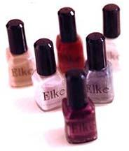

|
|
Issue 10May 21, 1998Copyright ©1998Written, directed, created and produced by
|
Colours of Australis Contest plus winner of Alloy Contest and her award-winning essay! | |
The Makeup Counter Beauty Advice and special section from a real makeup artist | |
Flips and Tips Special deal from OPI | |
$5 Popcorn Movie Reviews Object of my Affection and Excess Baggage | |
Sportz: Dangers of Tanning | |
Horroscopes- Our twist on astrology! |
Gee! That's Catchy Music Column Review of Tori's latest and the Door's | |
Surf Report Tons of kewl links! |
Next Issue: Week of June 5
Aaah! Sorry this issue is so late but we've been awfully busy lately! School is almost out! We are so stoked about our new Colours of Australis contest... we've got 3 awesome prize packages! Go to the Contest Area to find out more! We are also really excited because Elke (a famous makeup artist) volunteered to write us an article. We got all your responses to the picture question in last issue's suggestion question. You want more pictures! We're working on it for next issue :) We're very happy to announce that we are starting the Test Drive column this issue! Read our reviews and/or submit some of your own! Tell us your suggestions for the zine by sending mail to the suggestion box! The suggestion box question of the issue is:
Hope you like Issue 10!
Butta-Fly Girlz is looking for some help! We've got a couple of positions we want to fill and even a few new columns. If you have any column ideas, email to us! Tell us what you want to see! What we'd need from you is to get your articles in on time, and to participate in any Butta-Fly Contests.
Decorating Diva- Tips on decorating your room.
Music and Movie Reviewers- We always need these!!
| 10. Old Navy (Classic clothes are always in demand) | |
| 9. Quicksilver (Surf's up dude!) | |
| 8. Gap (The best quality shirts and jeans) | |
| 7. Bulldog (Our fav tank tops!) | |
| 6. Adidas (The best sports brand) | |
| 5. Evolution (Always bringing us the latest trends!) | |
| 4. Free People (Bringing back vintage styles in a new way!) | |
| 3. Dr. Martens (The best shoes around) | |
| 2. Rampage (They've always got the latest styles) | |
| 1. Levi's (The ULTIMATE jeans) |
Next issues topic for Top Ten: Top Ten Reasons We're Glad School's Out. Send your submissions to us at AllisonGr
A. Casually say hi! |
B. Start laughing so he'll think you're easygoing and "fun" | |
C. Crush? What's that? |
A. You have to! Otherwise what are you going to talk about in Biology tomorrow? | |
B. There is a chance you'll see Scott Wolf without his shirt on. | |
C. You think you watched it once while you were doing your homework. |
A. "I've still got it!" and smile back. | |
B. "Oh my god! Is he staring at the zit on my nose?" | |
C. "Is he trying to copy my homework?" |
A. You buy something occasionally that you really like | |
B.You're impulsive, buying things without really deciding whether you like them or not first and in mass quantities. | |
C. You buy the essentials, nothing more, nothing less. |
A. A little sad but you'll work extra hard to make it up | |
B. Totally bummed. You cried all night long. You try to beg your teacher to bring it up. | |
C. What's a couple of D's? |
Mostly A's: You have a good balance between being completely obsessed and not caring about anything. You know that some things are not a big enough deal to go nuts about.
Mostly B's: You are a tad bit obsessive! It is normal to obsess over a guy but to stalk him is a little overboard. Try to tone it down a little bit when you're around him.
Mostly C's: Maybe you should care a little more about what's going on around you. It is okay to care about stuff, as long as you don't go too far. Take pride in yourself and what you do.
What Goes |
What Blows |
| Sound Bites Lollipop cuz you can hear them in your head. | Tootsie Roll pops. They lie! It takes way long than three licks to get to the center! |
| Smiling (show off your pearly whites) | Frowning (takes more energy than smiling) |
| Netiquette (your net manner are very important) | Being rude/trashy online |
| Summer | Having to go to summer school :( |
| Tori's new CD "from the choirgirl hotel" | Hanson's new CD of earlier recordings |
| Taking walks at sunset | Allergies! Itchy eyes and headaches! :( |
| Silver toe rings | Athlete's foot |
| Godzilla Ads (some of them are kinda funny like the ones on buses) | Those annoying commercial theme songs that get stuck in you head (lol) |
We are having a new contest sponsored by Colours of Australis! To enter the contest, please go to the Contest Area! We've even got pictures of the prize packages!
The winner of the Alloy Contest is XSGIRLY! Congrats! Send us you home address and we will forward it to Alloy so you can get your great prize!
Here's her winning essay about fashion:
Hey- great zine and page! Here's my essay-- pick me!
My style cannot be narrowed down to any one word, unless the word was "Marne". I
take bits and pieces of every "style", like trendy, classic, skater, whatever,
and I create my own look. It's not freakish, weird, or dumb, but it's nothing anyone else
is wearing. I hate when girls are like "I'm not afraid to be me!" and
junk...great, dearie, but actions speak louder than me. Honestly, if you compared the
number of girls who claim they stand out and are different and the number of girls that
*do*...yikes.
In short, I basically just dress like me. My favorite outfit-- red cardigan from my older
cousin (I stole it from her, and luckily she hasn't noticed yet- hehe), my baggy jeans
from delias, i think, and my white tee with a little sumo guy on it (I got it at jcpenny's
i think), and my favorite shoes- classic adidas's. Don't forget to notice my at home hair
color =D
Thanks for listening~
Marne
 Elke Von Freudenberg is a top editorial makeup artist and hair
stylist, based in New York and Los Angeles. Her clients include: Calvin Klein, Paul
Mitchell Hair Systems, Aveda, Rolling Stone Magazine, Neue Magazine... Her online
portfolio can be viewed at:
Elke Von Freudenberg is a top editorial makeup artist and hair
stylist, based in New York and Los Angeles. Her clients include: Calvin Klein, Paul
Mitchell Hair Systems, Aveda, Rolling Stone Magazine, Neue Magazine... Her online
portfolio can be viewed at:
http://www.geocities.com/FashionAvenue/4016
Elke is the creator of "Elke| The Cosmetic Collection", a high fashion cosmetics
line available exclusively on the net.
mail: elke@pacbell.net
Are you hip? Or not? Here's a way to tell if your current beauty face is really that, CURRENT!
What's In
Dewy beautiful skin. Yes, you can go back and apply foundation once again. Beautiful skin is back, and it's about time! Update your new skin look by using your stick foundations from winter, and mixing them with a dot of moisturizer, for a sheerer, yet more covered look.
What's In
Shimmering skin. Call this the nighttime version of Dewy (see above), but shimmering skin looks great by candlelight! The trick is not to go too overboard. Try a shimmery powder, (like the one by Mac, or our new Hologram Effects Powder in our Spring Summer Collection), and apply on the high points of the face. Like the forehead, eyes, cheekbones, and chin. Go for that shimmering, magical look. Think fairy dust.
What's In
Happy, happy, happy. Cheeks that is. Smile, dot on cream blush, blend. Done. (Apply your blush first before any other color. If it looks good with nothing else on your face yet, you've got the right amount on.)
What's In
Sheer, sheer, sheer. And again, sheer! SEE through, and really any lip color will do. Just update the texture. Apply your moisture stick, vitamin E oil, Vaseline, clear gloss, anything that will dilute the color, and make a matte lipstick shiny new again. THE hot colors of spring/summer? Sheer Red (THE look for night), sheer Fuschia (well, if you're brave!), and sheer yellowy browns, and sheer watermelon.
What's In
Glossy, glossy, glossy. Just transfer that wet look from your face, to your lips. Make it a permanent part of your makeup routine. Just throw on your favorite lip color, and then slick a dot of clear or shimmering lip gloss on top. Aaah! See! That wasn't so hard! (P.S. By putting lipstick on first, and then dotting lip gloss on top, you'll put less on, and you'll concentrate only on the middle of the lips, so it'll be less likely to bleed off.)
What's In
Softness. Blended. Toss out that eye pencil (& liquid eyeliner!), throw away that lip pencil, and finger apply everything. Eyeshadows smudged on, blush dabbed on in cream, not powder, and lipstick applied with your pinky finger. There you go! The newest look! And you thought finger painting in kindergarten wouldn't get you anywhere!
See Elke's fab beauty line- Cosmetic Collection. Photos courtesy of Cosmetic Collection

Elke has generously offered to donate some makeup to one lucky winner! She will give one reader who answers the questionnaire below and sends it to AllisonGr a prize makeup package worth $63. It will include 1 lipstick, 1 lip liner, 1 eyeshadows, 1 blush, 1 eyeliner, and a nail polish. The winner will be allowed to pick their colors too! Believe it will be hard, they are all awesome! Check them out at the Cosmetic Collection.One winner will be chosen at random. Just send the completed following questionnaire to Allison :1. On a scale from 1 to 5, how would you usually rate our beauty section?
2. Do you think the column needs improvement, if so tell us what we should do?
3. If you could only have one makeup product what would it be?
4. What are your favorite brands of cosmetics?
Send your makeup questions to AllisonGr or FlyGal102
Dear Makeup Lady,
I want to have a low maintenance look for summer. What do you recommend?
-Laid Back Lady
Dear Laid Back Lady,
I would suggest wearing a sheer foundation or powder on your face to keep your face's coloring even. One to try might be Revlon's new sheer Colorstay. For summer I would either skip eyeliner all together or try a lighter color such as pale yellow, light brown, or white (it makes your eyes look larger!). For eyeshadow a pastel color or neutral brown would add some shading but not too much color. Sweep it over your eyelids up to the crease. On the lips, there are a couple options. The simplest most natural being clear lip gloss or chapstick. If you want a little color, I swear by Cover Girl's LipSlicks LipGloss (I wear it in hint of shimmering sandstone). For a little more color but still staying neutral, you might try a pinkish-brownish color like Jane's Teddy Bare. For your hair, I think wither two "Dorothy" braids, or worn down naturally would look really cute.
- The Makeup Lady
Last issue, we gave you some toenail painting tips including using toe separators. In one of the magazines I saw an ad that OPI nail polish was giving away free toe separators with every bottle of nail polish you buy! OPI is a great brand and they always have some really great shades.
Seen any movies lately that you wanna review? Send them to us. They can be rentals or ones you've seen recently at the theater.
Our rating system is as follows: 1- stinkbug (the movie stunk) 2- mosquito (annoying, u wanted to smack the actors) 3- house fly (tolerable) 4- super fly (it was pretty kewl) 5- Butta-fly (the kewlest)
It is entertaining and cute story but pretty unrealistic. Starring Jennifer Aniston and Paul Rudd, and the guy who plays Ira on Mad About You (sorry couldn't remember his name), the movie has a few funny moments but it's not really a comedy. It's really hard to explain without giving the movie away. If you like complicated plots with unexpected twists, then you'll probably enjoy this one.
Okay, so basically this movie sucked!Although Alicia's acting was about as talent-worthy of that in Clueless, this movie did not call for that kind of horrible acting style. It also stars Benecio del Toro as a criminal. The movie had a horrible story line and even worse actors. The movie attempted to be cute and appeal to the "bad girl" teenagers but it appealed more to the 11 and under crowd who think this is the way teenagers really act. I mean how many girls do you know that have faked their own kidnapping just to get attention from daddy. Don't waste the 3 bucks it costs to rent it, if you really must see it, then wait for it to come on HBO.
The advice column will now be written by Skachoo Please send her your questions!
Send in your fav unique sport story to Allison
Instead of my regular column (I know, I know, I promised! But this is important!) I'll be doing a special on skin cancer. I'll see ya next time! I'm going to try to make this short so that it doesn't get boring!
Skin cancer is sometimes called the silent killer. It kills hundreds of people a year, sometimes by itself, but usually by causing other kinds of cancer. One kind of cancer, melanoma, can travel to other parts of the body through the blood stream. The cancerous cells can implant on vital internal organs and cause a tumor. If the tumor gets large enough, it impedes the functioning of the organ, and the person could die. Don't let this happen to you!
Here are a few ways to stay safe this tanning season!
Avoid the sun between the hours of 12 and 2 o'clock. This is the time that the UV rays are the most dangerous in most areas in the US. To get the UV forecast for your city go here ----> UV_INDEX
Use sunscreen. Find the SPF that's right for you, but wear at least 15. I wear 45, and I almost NEVER burn without it, but it's good to be safe just in case. Most sunscreens will only reduce your tan minimally! Isn't that great news?
Wear a hat. This protects your scalp and face. Try to get one with at least a 2 inch brim, but any hat is better than no hat.
Wear sunglasses. Ever heard of cataracts? They're clouds on the upper layer of your eye lenses, caused by UV rays. The ONLY kind of sunglasses that will help are the ones that protect your eyes from UV rays, so make sure that the next pair you buy are UV protectant.
Cover up. In other words, wear clothes when you have the chance. (Not that you usually run around naked or anything) Even a wet white T-shirt provides an SPF of 5.
Avoid artificial tanning. This means sunlamps and tanning booths. Most people think that they are safer than tanning outside, but that's not necessarily true. Tanning booths use very little UVB (which was thought to be the only cancer-causing UV rays) and heavily use UVA (which we have recently discovered cause cancer also)! If you don't tan normally, try an artificial tanning lotion.
Are you:
a) Blonde or red haired? | |
b) Blue or green eyed? | |
c) Light or fair skinned? | |
d) Part of a family that has a history of skin cancer? | |
e) Outside constantly? | |
f) A tanning booth regular? | |
g) The owner of a sunlamp? |
My mom was diagnosed with melanoma when I was just a kid and I have had 2 moles removed from my body. I just wanted to let you know that we didn't think that it could happen to us either, and it did. My life has been directly affect by skin cancer, and I hope that yours won't be.
Until next time ~Sam~
Have a fitness question? Send it to me ----> ZineSam@aol.com
Put Butta-Fly Girlz in the subject box, otherwise it will not be answered in my
column. Thank you!
We are going to try a column devoted to you. We will have a topic and you can write a paragraph about it. It can deal with sex, body, life, diets, etc! If you have comments about the topic then send them to Grlfriendz
A note from the columnist :
This isn't like the normal sex & body sections. This is for you to speak your mind. I
think it's better this way :) Please don't send me questions about sex or body, just send
me your responses. Thanks!
Here's our product rating system:
1- stinkbug (the product stunk) 2- mosquito (not too good) 3- house fly (tolerable) 4-
super fly (it was pretty kewl) 5- Butta-fly (the kewlest)
Queen Helene generously donated us the following products to review:
Aloe Hand and Body Lotion (4-Super Fly) I loved the not too heavy scent of this product. It kept me moisturized for quite a while but when first applied it was a little bit sticky.
Mint Julep Masque (5-Butta-Fly) This is one of their signature products and now I know why. It totally helped to clear my face of blemishes. Also it's this awesome green color and what a shocker it smells like Mint!
Cocoa Butter Hand and Body Lotion (4-Super Fly) It smells awesome... kinda like the beach! The label says it helps prevent skin wrinkles but I'm not old enough to know if that proves true yet...lol. It's great because it has the smell of cocoa butter without the greasy feeling.
Styling Gels (4-Super Fly) I don't use gel very often but I could tell that the three types that Queen Helene sent would be great! They gave us Hard to Hold, Superhold, and Ultra Hold versions depending on how much stiffness you need. The consistency of the gels were perfect and they pretty much held my hair. The only problem was that they left my hair a little bit greasy looking.
Cholesterol Hair Conditioning Cream (4-Super Fly) This product is great for healing damaged hair. It makes hair appear healthier and shinier. The only thing I didn't like about the product was it's name. It just sounded gross but it worked great!
If you have any product reviews, send them to us!
This is our twist on astrology. Don't take it seriously, it's just for fun! The category's will change every issue, so look out!
If your favorite veggie is carrots or peas:
Your backpack will fall of and get run over by bus.
If your favorite veggie is potatoes or corn:
Then your life will rule! Cuz those are my favorite veggies!
If your favorite veggie is celery or lettuce:
Then you will get a piece stuck on your teeth!
If your favorite veggie is not listed above:
You'll be jogging and you'll spot a hottie then realize the front of your shirt is soaked
with sweat.
Send in your Music Reviews to AllisonGr
![[Cover Art]](http://www.musicblvd.com/md/ca/1/thumb/062164.gif) Tori Amos- From the choirgirl hotel
Tori Amos- From the choirgirl hotelThis CD is awesome! Tori has done it again! Her new CD shows a completely different side of her musical talents. Her new style include other instruments. She said she was tired of doing "the girl with the piano thing". The first single off of the CD is "Spark" and it's an edgy song about addiction. My favorite songs so far are Jackie's Strength, Pandora's Aquarium, iieee, and Black-Dove. I have been a Tori fan for 4 years and I am thrilled with her new album. It has many different styles of music and as always the booklet contains interesting photos and the lyrics to all her songs. If you are a Tori fan, I definitely recommend this CD. Got to www.tori.com for samples off her new album and even some videos.
![[Cover Art]](http://www.musicblvd.com/md/ca/1/thumb/000301.gif) The Door's Greatest Hits
The Door's Greatest HitsThis is a must have CD! This CD contains all of their biggest songs and is a double CD. Some of my favorites are Light My Fire, The End, and When You're Strange. Almost all the songs are great and show the frees spirit of the seventies. If you are really into the band, you should rent the Doors starring Val Kilmer for a look at Jim Morrisson's life. I recommend this CD to any classic rock lover.
| Cargo shorts | |
| Tiny tanks paired with cardigans | |
| Strappy sandals | |
| Thongs/Flip-flops (we especially like the selection from Reef) | |
| Strappy sundresses | |
| Shell necklaces | |
| Toe rings | |
| Sheer Nail Polish | |
| Beach Bags (either crocheted or straw) |
| Plaid | |
| White Cotton with Eyelets | |
| Yellow (both pale and bright) | |
| Lavender | |
| Seafoam Green | |
| RED! |
Basically, everything is stylin' this summer! Just remember to wear color! I love blue, black, tan and white as much as the next girl, but this summer livin things up by adding some different hues to your wardrobe. Also don't forget accessories, they can make an outfit! We love tiny little shell necklaces paired with either sundresses or tank tops. The sundress is a great option for summer. You can wear over your swimsuit to the beach and then wear it to a party! It's very versatile! I've seen a lot of really cute plaid ones at Macy's. Lots of feminine floral designs are coming out this summer too! I especially love the little tank tops! Basically anything goes this summer as long as it's got color!
Check out these awesome sites:
| Julia's Swap Society Lot of great beauty links! | |
| kissthisguy.com - The Archive of Misheard Lyrics This site is so funny! | |
| Kristina's Nails Page A great polish page! | |
| Mood Swings Nail Polish Home Page Create you own nail polishes | |
| Shirtless Teen Idols. Many galleries of young actors, singers and others of today and yesterday. Don't worry, this page is not pornographic | |
| The Lipstick Page Lipsticks of the Stars! | |
| The Seinfeldiest Site on the Web! I chose this site in tribute of the last Seinfeld :( |
Adios chicas! The next issue will be out sometime in the week of June 5! Articles must be received by June 1!
Fem Slant (stuff from a feminist point of view) | |
Sweet Dreams! (A Dream Decoding Column, send in your dreams to AllisonGr) | |
More stuff! |
Send us your ideas! We need your help to make this 'zine awesome!